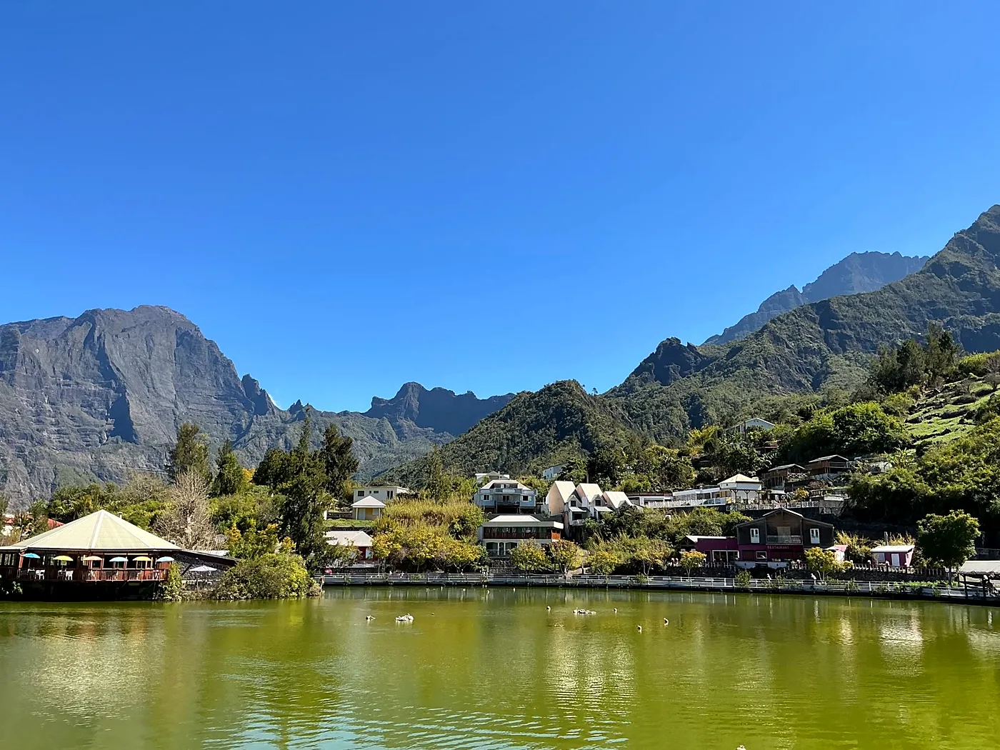
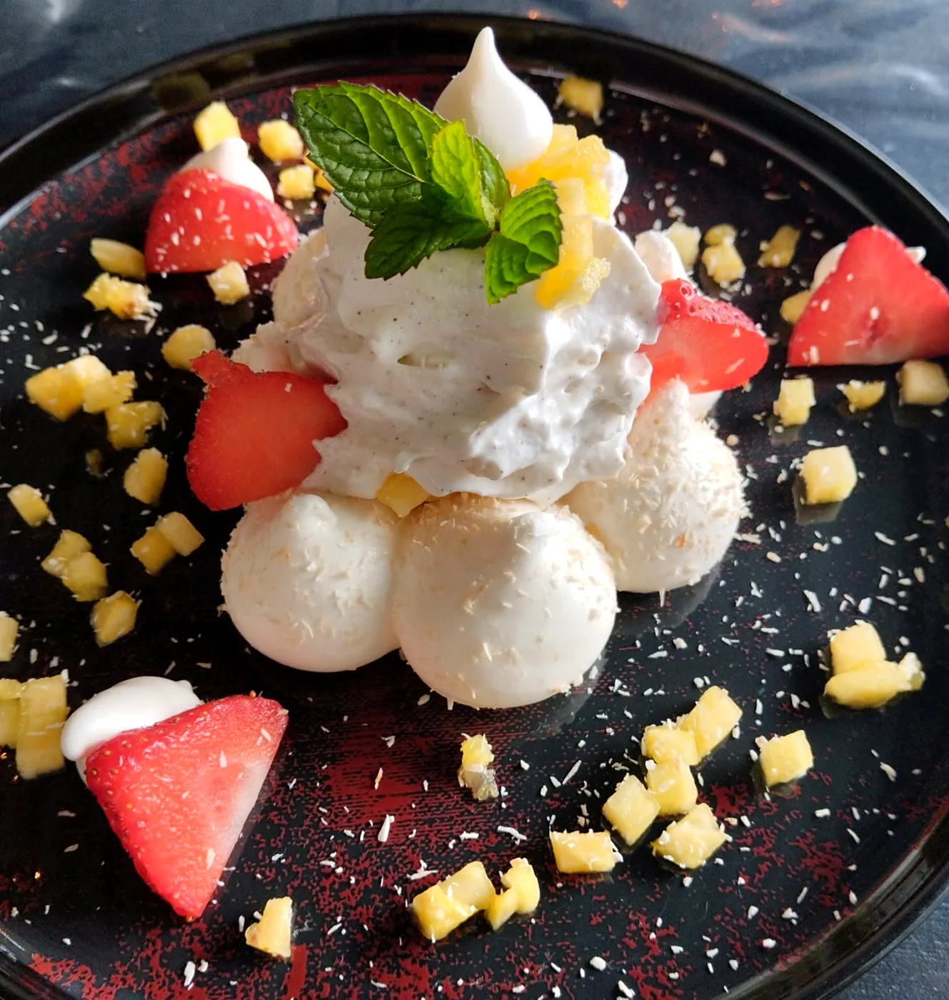
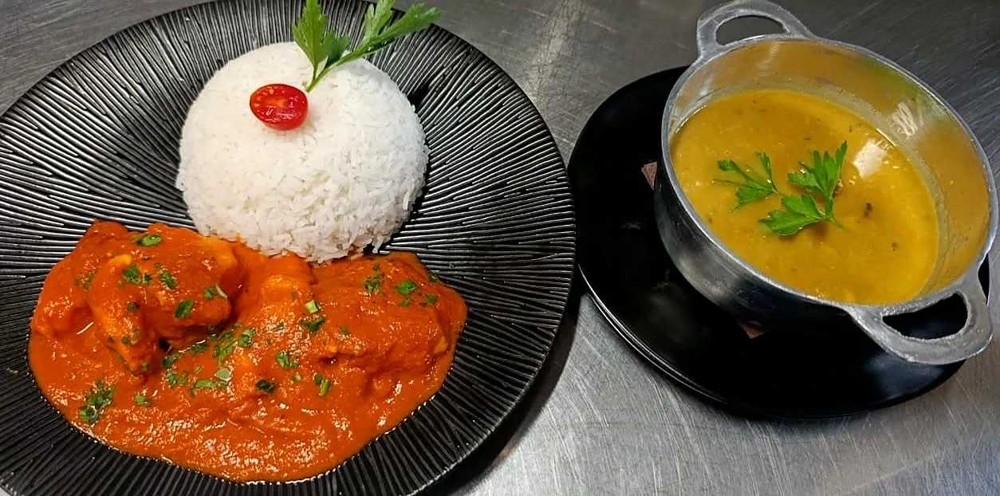
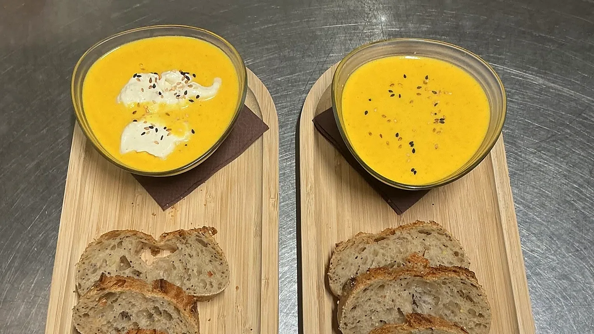
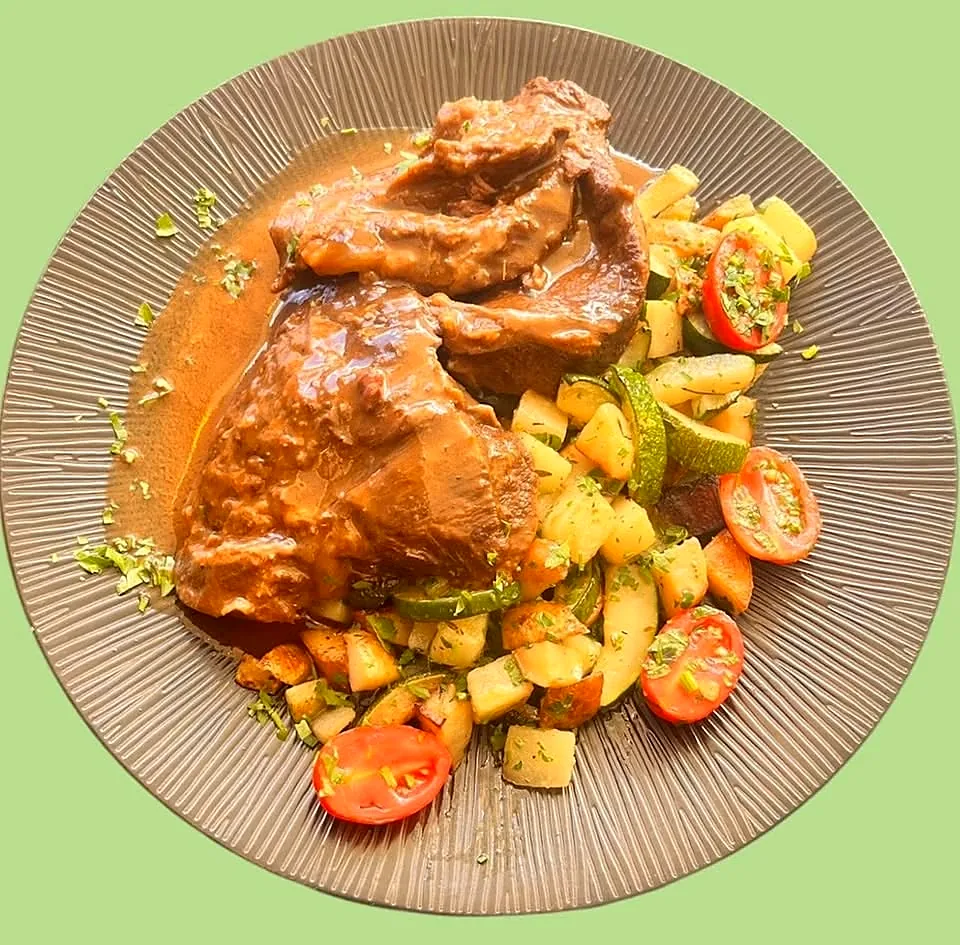
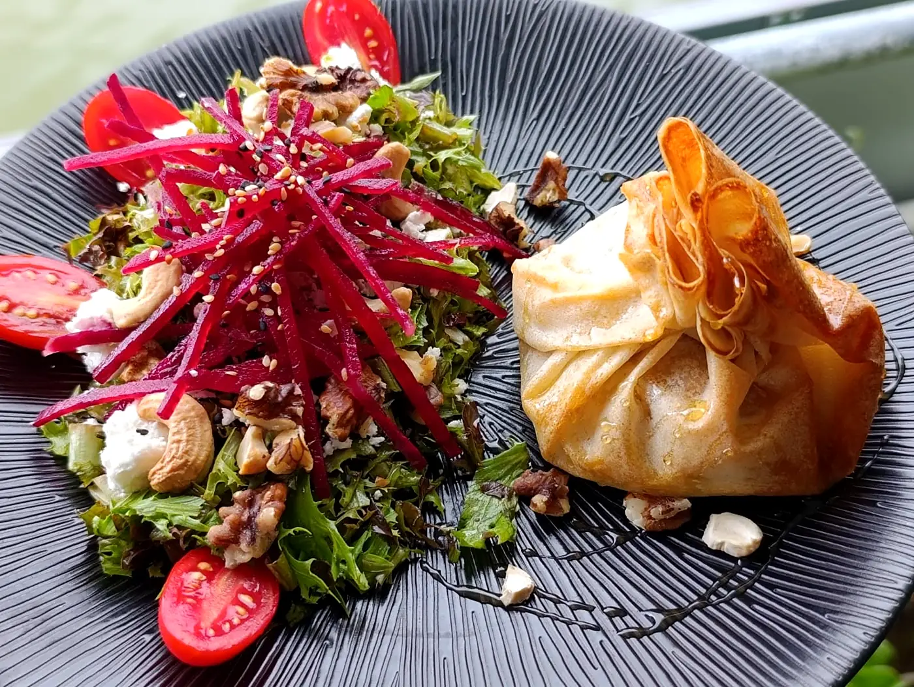
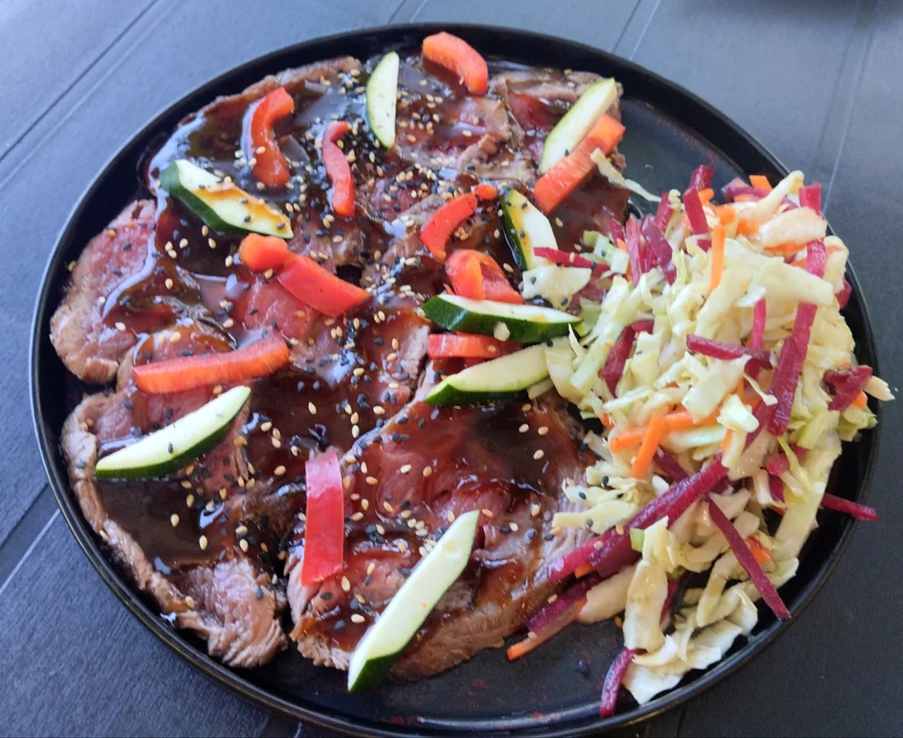
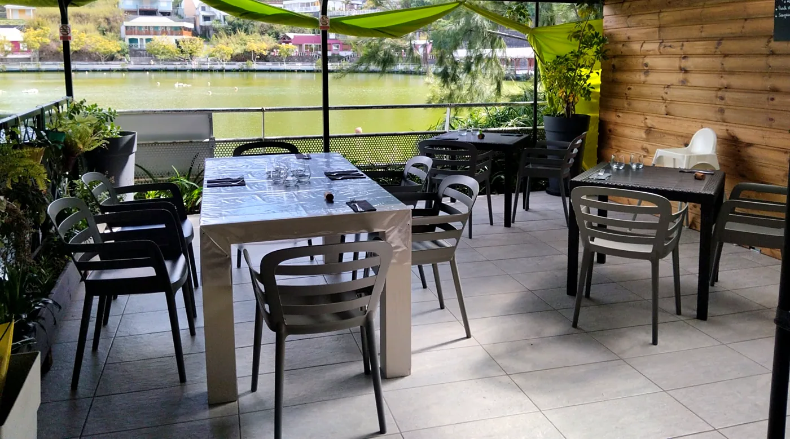
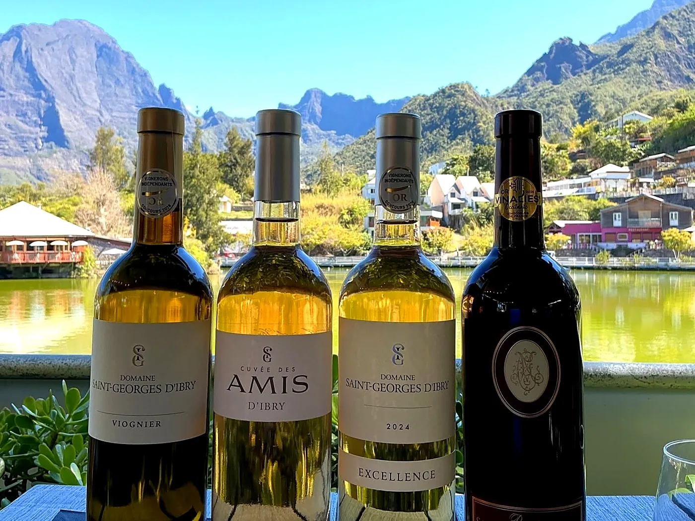
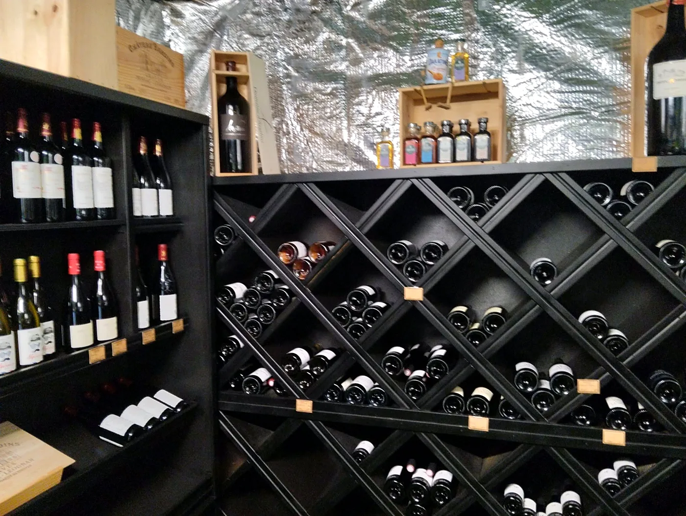

Le Spot, c'est quoi ?
Un restaurant avec vue, au bord de la Mare à Joncs
Au cœur du cirque, Le Spot de Cilaos sert une cuisine métro-métissée : caris de poisson du jour, viandes en sauce, veloutés, salades et desserts, tout est fait maison avec un maximum de produits frais.
Chaque semaine, l'équipe imagine de nouvelles suggestions : cari de capitaine, filet de perroquet sauce combava, joue de bœuf, pavé de bourgeois sauce curry…
Et pour finir en douceur : la pavlova maison ou le petit dernier, la soupe d'ananas et son granité de pastèque.

Dans l'assiette
Fait maison, de l'entrée au dessert
Faites glisser →







La cave à vin du Spot
Un verre face aux remparts
Le Spot, c'est aussi un bar et une cave à vin. Derniers arrivés : les vins du Domaine St Georges d'Ibry, « l'Âme des Pins » en rouge (toujours un coup de cœur), « Excellence » en rosé et en blanc, « Cuvée des amis »…
Emballages disponibles pour les bouteilles à offrir. Et pour les amateurs : bières allemandes Hefeweizen ou Pilsener en 50 cl, kéfir de fruits 100 % Réunion.
L'abus d'alcool est dangereux pour la santé, à consommer avec modération.

Horaires
Quand venir ?
Horaires publiés le 5 novembre 2026. Ils peuvent changer d'une semaine à l'autre : un coup de fil avant de monter, c'est plus sûr.

Recommandé à 100 % (24 avis Facebook)
Ils en parlent
« Mon restau préféré à Cilaos »
Jocelyne, Facebook
« Allez-y les yeux fermés, c'est toujours un régal ! »
Mercedes, Facebook
« C'est excellent je conseille fortement »
François, à propos de la joue de bœuf
« Hum !!!! Très appétissant. »
Christiane, Facebook
🏅 De nouveau dans le Guide Kaspro, « une grande fierté pour toute l'équipe »
✦ Offrir pour Noël ✦
Les fêtes au Spot
Un repas de fin d'année entre collègues, en famille ou entre amis, avec la vue sur le cirque ? L'équipe du Spot peut vous recevoir pour un déjeuner de fête.
Et pour gâter vos proches : une bouteille de la cave, joliment emballée.
Nous trouver
Venir au Spot
📍 Rue de la Mare à Joncs, 97413 Cilaos
📞 0693 51 74 24 (réservations et commandes)
Bon à savoir
🍽️ Service du midi de 11h30 à 15h.
🥗 Salades à emporter : commande avant 11h15.
🍷 Bouteilles de la cave emballées pour offrir.